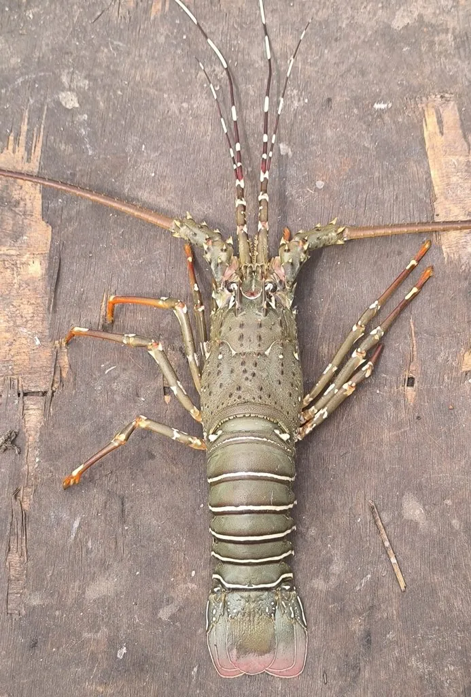

甲壳动物 · 动物界
黄斑龙虾 Panulirus polyphagus

印度-西太平洋的大型龙虾，腹部有黄色斑点，触角粗长，没有大螯，栖息于浅海岩礁和泥沙底，是重要的经济虾类。
- 分类
- 门节肢动物门纲软甲纲目十足目科龙虾科属龙虾属
- 栖息环境
- 热带浅海的岩礁、珊瑚礁和泥沙底，白天藏在洞穴中
- 地理分布
- 印度洋和西太平洋热带海域，包括中国南海
- 保护级别
- IUCN 暂无评估；中国未列入国家重点保护名录
物种志
黄斑龙虾体长 25–30 cm，体色青褐或灰褐，腹部各节有黄色斑点，头胸甲和腹部布满棘刺；第二触角粗长，基部有发声器，步足细长，尾部宽大。
它分布于印度洋和西太平洋的热带浅海，包括中国南海、东南亚和澳大利亚北部，栖息于岩礁、珊瑚礁和泥沙底，白天藏在洞穴和岩缝中，夜间出来捕食贝类、海胆和小虾。黄斑龙虾是重要的经济龙虾，肉质鲜美，市场价格高，捕捞压力较大。它生长缓慢，繁殖期雌虾抱卵，幼体浮游期长，资源恢复较慢；黄色斑点分布在腹部各节，是辨认它的特征，夜间觅食时它常沿着礁石边缘行走。目前 IUCN 暂无评估；中国未列入国家重点保护名录，需要加强捕捞管理和栖息地保护。
形态与习性
- 食性捕食贝类、海胆和小虾
- 体长25–30 cm
- 识别腹部各节有黄色斑点
- 习性昼伏夜出，沿礁石边缘觅食
- 繁殖雌虾抱卵，幼体浮游期长
- 经济肉质鲜美，是重要经济龙虾
趣味知识
- 黄斑龙虾的腹部每节都有黄色斑点，在龙虾里很有辨识度。
- 它没有大螯，遇到危险时主要靠带刺的触角和甲壳防御。
- 这种龙虾生长慢、幼体浮游期长，种群恢复并不容易。